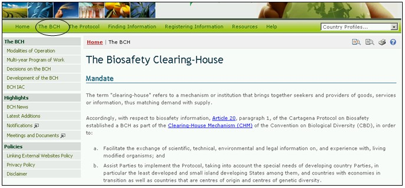
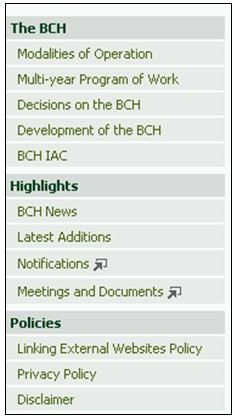

Ссылка: http://bch.cbd.int/about/
Вводная страница данного раздела поясняет полномочия Механизма посредничества по биобезопасности и содержит краткую информацию о создании и развитии Центрального портала. Информация об МПБ поделена на три подраздела:
1) подраздел МПБ, включающий условия функционирования МПБ, многолетнюю программу работы, решения в отношении МПБ, этапы его развития и информацию о работе неформального консультационного комитета МПБ (НКК МПБ);
2) подраздел Основные события, включающий новости МПБ, новые пополнения баз данных, объявления и материалы совещаний;
3) подраздел Политика, включающий правила использования ссылок на внешние веб-сайты, принципы конфиденциальности и ответственности.

Рисунок 9
Информацию данного раздела можно получить, используя меню в левой части страницы Механизма посредничества по биобезопасности, или используя выпадающее меню навигационной панели раздела МПБ.

Рисунок 10